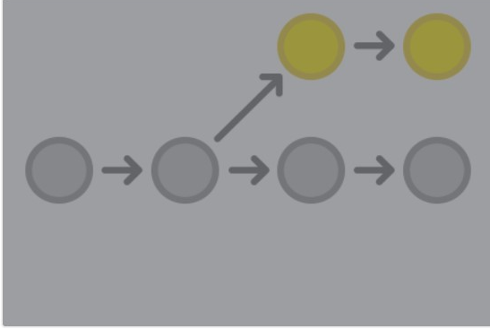

Introdução - Entendendo o Branch
Um dos pontos chave para trabalhar com git é entender o conceito de branches. Com ele podemos criar toda uma linha de commits e trabalhar em diferentes linhas de desenvolvimento.
Entenda como linhas de desenvolvimento o conjunto de alterações em conteúdos do projeto na forma de commits, gerando entre eles uma relação de hierarquia. Esses commits acabam gerando uma espécie de árvore, onde cada ramificação (branch) vai se espalhando a partir de um ponto base:

Representação de um branch (em amarelo).
Para criar um nova brach a partir do terminal:
Verifique se foi criado novo branch:
Mude para o novo branch.